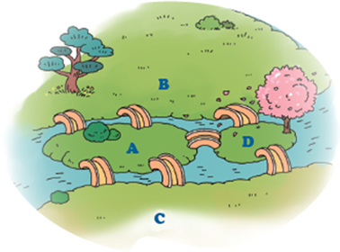

스스로 해결하기
다리 건너기 문제
문제 해결
오일러의 한붓그리기 규칙을 적용하면 문제를 해결하는 데 도움이 된다. 규칙을 보며 질문에 대답해 보자.
오일러의 한붓그리기
1
홀수점(선이 만나는 수가 홀수인 점)이 없는 경우에는 한붓그리기가 가능하고, 시작점과 끝점이 일치한다.
2
홀수점이 2개면 한붓그리기가 가능하고, 시작점과 끝점이 다르다.
3
홀수점이 1개이거나 3개 이상이면 한붓그리기가 불가능하다.
예시
홀수점이 없으므로, 왼쪽 별은 한붓그리기가 가능하다.

7개 다리들을 모두 한 번씩만 건너서 출발한 곳으로 다시 돌아올 수 있을까?